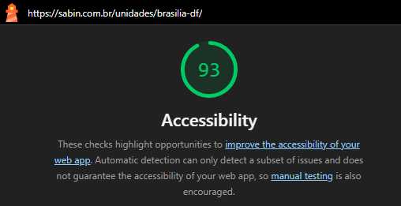
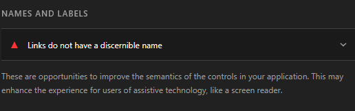
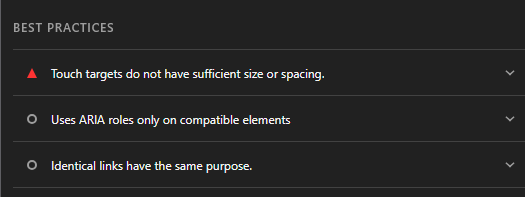
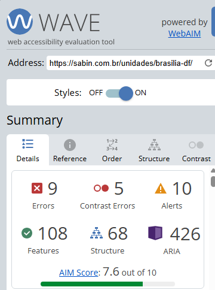
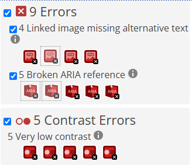
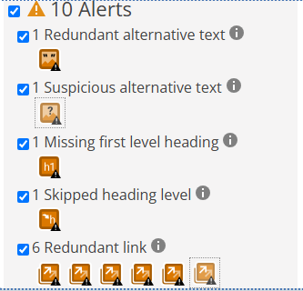
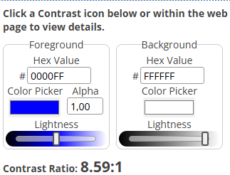
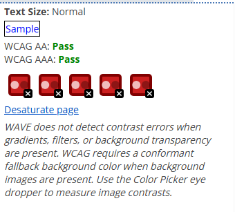
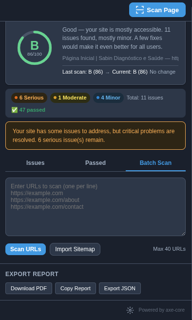

Ferramentas Utilizadas
Lighthouse
O Lighthouse é uma ferramenta integrada aos navegadores baseados em Chromium utilizada para auditoria automática de páginas web.
Configuração
- Navegador: Brave Browser
- Categoria avaliada: Accessibility
- Modo: Mobile
- Página analisada: Unidade Brasília-DF do site Sabin
Resultado
A página analisada obteve pontuação de 93/100 em acessibilidade.
Problemas Identificados
Links sem nome discernível
Foram encontrados links sem nome acessível adequadamente definido, dificultando a interpretação por tecnologias assistivas.
Referência: WCAG 2.2 – Critério 4.1.2 (Name, Role, Value)
Área de toque insuficiente
Foram identificados elementos interativos com tamanho ou espaçamento reduzido para interação em dispositivos móveis.
Referência: WCAG 2.2 – Critério 2.5.8 (Target Size – Minimum)
Evidências
-

Pontuação geral · 93/100 em Accessibility, auditado na unidade Brasília-DF
-

Nomes e rótulos · links sem nome discernível para tecnologias assistivas
-

Boas práticas · alvos de toque sem tamanho/espaçamento suficiente
WAVE
O WAVE (Web Accessibility Evaluation Tool) foi utilizado para complementar a avaliação automática de acessibilidade e identificar problemas relacionados à estrutura semântica, textos alternativos e contraste.
Resultados Gerais
| Categoria | Quantidade |
|---|---|
| Errors | 9 |
| Contrast Errors | 5 |
| Alerts | 10 |
| Features | 108 |
| Structural Elements | 68 |
| ARIA | 426 |
Erros Encontrados
Linked Image Missing Alternative Text
Foram identificadas 4 imagens utilizadas como links sem texto alternativo.
Referência: WCAG 2.2 – Critério 1.1.1 (Non-text Content)
Broken ARIA Reference
Foram identificadas 5 referências ARIA inválidas.
Referência: WCAG 2.2 – Critério 4.1.2 (Name, Role, Value)
Problemas de Contraste
Foram identificados 5 elementos com contraste muito baixo entre texto e fundo.
Referência: WCAG 2.2 – Critério 1.4.3 (Contrast Minimum)
Alertas Encontrados
- 1 texto alternativo redundante;
- 1 texto alternativo suspeito;
- 1 ausência de cabeçalho de primeiro nível (H1);
- 1 salto na hierarquia de títulos;
- 6 links redundantes.
Evidências
-

Resumo geral · 9 errors, 5 contrast errors, 10 alerts, 426 ARIA
-

Erros · imagens-link sem texto alternativo e referências ARIA inválidas
-

Alertas · ausência de H1, salto de hierarquia e links redundantes
-

Contraste (1/2) · elementos com contraste insuficiente entre texto e fundo
-

Contraste (2/2) · continuação dos elementos com contraste insuficiente
AccessCheck
O AccessCheck é uma extensão baseada no motor axe-core (Deque Systems), utilizada para uma terceira verificação automatizada, cruzando os achados do Lighthouse e do WAVE com outra base de regras.
Configuração
- Página analisada: Página Inicial / Unidade Brasília-DF do site Sabin
- Motor de varredura: axe-core 4.10
Resultado
A página obteve nota B (86/100) — classificada pela ferramenta como "mostly accessible". Foram identificados 11 problemas no total, além de 47 verificações aprovadas.
| Severidade | Quantidade |
|---|---|
| Serious | 6 |
| Moderate | 1 |
| Minor | 4 |
| Total | 11 |
Problemas Identificados
ARIA Prohibited Attribute (Serious)
O atributo aria-label foi aplicado em elementos <div> sem um role válido — caso do carrossel de notícias (cmp-carousel-cards__carousel) e de sua paginação (cmp-carousel-cards__pagination). Sem um role associado, o aria-label é ignorado por leitores de tela.
Referência: WCAG 2.2 – Critério 4.1.2 (Name, Role, Value)
Link Name (Serious)
Dois links do banner rotativo da homepage usam aria-label="" (vazio) e não possuem texto visível, ficando completamente sem nome acessível para tecnologias assistivas.
Referência: WCAG 2.2 – Critério 2.4.4 / 4.1.2 (Link Purpose / Name, Role, Value)
Target Size (Serious)
Os marcadores de paginação do carrossel (swiper-pagination-bullet) possuem apenas 12×12px, abaixo do mínimo de 24×24px, e espaçamento insuficiente (16px) entre alvos vizinhos.
Referência: WCAG 2.2 – Critério 2.5.8 (Target Size – Minimum)
Page Has Heading One (Moderate)
Confirma o achado já identificado pelo WAVE e pela Avaliação Heurística: a página não possui nenhum <h1>, prejudicando a navegação por cabeçalhos em leitores de tela.
Referência: WCAG 2.2 – Critério 1.3.1 (Info and Relationships)
ARIA Allowed Role (Minor)
Os slides do carrossel principal (article.cmp-banner-rotativo-imagem__slide) usam role="group", que não é um role permitido para o elemento <article> — 4 ocorrências.
Referência: WCAG 2.2 – Critério 4.1.2 (Name, Role, Value) — boa prática ARIA
Evidências
-

Resumo geral · nota B (86/100), 6 serious, 1 moderate, 4 minor, 47 aprovados